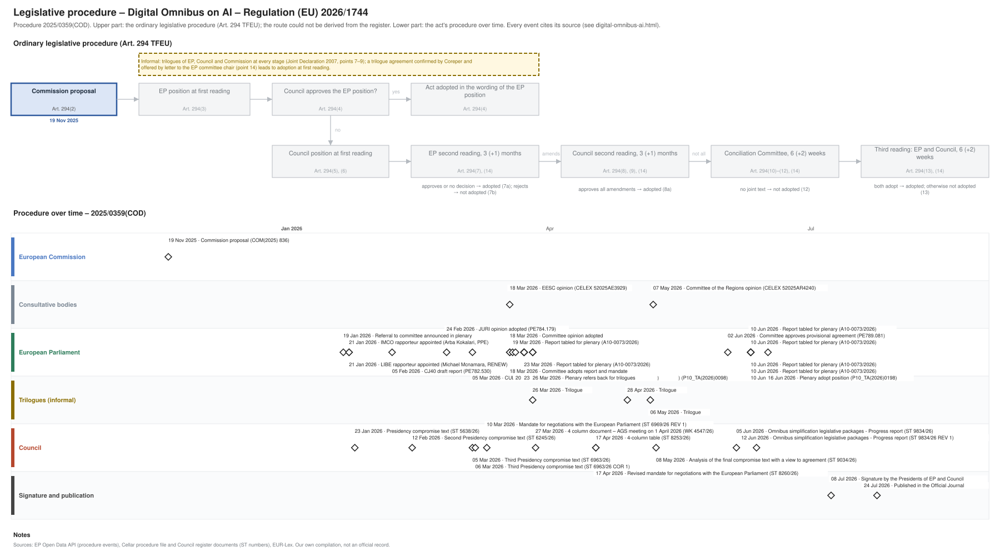

← All procedures · Regulation timeline
Procedure 2025/0359(COD), completed. Drawing: SVG · PNG · PDF (A3) · draw.io · Page as Markdown: digital-omnibus-ai.md
| Stage | Completed, published 24 Jul 2026 |
|---|---|
| Latest activity | 24 Jul 2026 · Signature and publication: Published in the Official Journal |

| Date | Actor | Event | Document | Source |
|---|---|---|---|---|
| 2025-11-19 | European Commission | Commission proposal (Art. 294(2) TFEU) | COM(2025) 836 | Cellar (CELEX 52025PC0836) |
| 2026-01-19 | European Parliament | Referral to committee announced in plenary | EP Open Data API, procedure 2025-0359 (REFERRAL) | |
| 2026-01-21 | European Parliament | IMCO rapporteur appointed (Arba Kokalari, PPE) | EP Open Data API, procedure 2025-0359 (participation RAPPORTEUR) | |
| 2026-01-21 | European Parliament | LIBE rapporteur appointed (Michael Mcnamara, RENEW) | EP Open Data API, procedure 2025-0359 (participation RAPPORTEUR) | |
| 2026-01-23 | Council | Presidency compromise text | ST 5638/26 | Cellar procedure file 2025/359 (Council register) |
| 2026-02-05 | European Parliament | CJ40 draft report | PE782.530 | EP Open Data API, procedure 2025-0359 (COMMITTEE_TABLING_REPORT) |
| 2026-02-12 | Council | Second Presidency compromise text | ST 6245/26 | Cellar procedure file 2025/359 (Council register) |
| 2026-02-24 | European Parliament | JURI opinion adopted | PE784.179 | EP Open Data API, procedure 2025-0359 (COMMITTEE_ADOPTING_OPINION) |
| 2026-03-05 | Council | Third Presidency compromise text | ST 6963/26 | Cellar procedure file 2025/359 (Council register) |
| 2026-03-05 | European Parliament | CULT opinion adopted | PE784.261 | EP Open Data API, procedure 2025-0359 (COMMITTEE_ADOPTING_OPINION) |
| 2026-03-06 | Council | Third Presidency compromise text | ST 6963/26 COR 1 | Cellar procedure file 2025/359 (Council register) |
| 2026-03-10 | Council | Mandate for negotiations with the European Parliament | ST 6969/26 REV 1 | Cellar procedure file 2025/359 (Council register) |
| 2026-03-18 | Consultative bodies | EESC opinion | CELEX 52025AE3929 | Cellar procedure file 2025/359 |
| 2026-03-18 | European Parliament | Committee opinion adopted | EP Open Data API, procedure 2025-0359 (COMMITTEE_ADOPTING_OPINION) | |
| 2026-03-18 | European Parliament | Committee adopts report and mandate | EP Open Data API, procedure 2025-0359 (COMMITTEE_ADOPTING_REPORT) | |
| 2026-03-19 | European Parliament | Report tabled for plenary | A10-0073/2026 | EP Open Data API, procedure 2025-0359 (TABLING_PLENARY) |
| 2026-03-20 | European Parliament | Report tabled for plenary | A10-0073/2026 | EP Open Data API, procedure 2025-0359 (TABLING_PLENARY) |
| 2026-03-23 | European Parliament | Report tabled for plenary | A10-0073/2026 | EP Open Data API, procedure 2025-0359 (TABLING_PLENARY) |
| 2026-03-23 | European Parliament | Report tabled for plenary | A10-0073/2026 | EP Open Data API, procedure 2025-0359 (TABLING_PLENARY) |
| 2026-03-23 | European Parliament | Report tabled for plenary | A10-0073/2026 | EP Open Data API, procedure 2025-0359 (TABLING_PLENARY) |
| 2026-03-23 | European Parliament | Report tabled for plenary | A10-0073/2026 | EP Open Data API, procedure 2025-0359 (TABLING_PLENARY) |
| 2026-03-23 | European Parliament | Report tabled for plenary | A10-0073/2026 | EP Open Data API, procedure 2025-0359 (TABLING_PLENARY) |
| 2026-03-26 | European Parliament | Plenary adopts amendments (mandate for trilogues) | P10_TA(2026)0098 | EP Open Data API, procedure 2025-0359 (PLENARY_AMEND) |
| 2026-03-26 | European Parliament | Report tabled for plenary | A10-0073/2026 | EP Open Data API, procedure 2025-0359 (TABLING_PLENARY) |
| 2026-03-26 | European Parliament | Plenary refers back for trilogues | EP Open Data API, procedure 2025-0359 (PLENARY_REFER_COMMITTEE_INTERINSTITUTIONAL_NEGOTIATIONS) | |
| 2026-03-26 | Trilogues (informal) | Trilogue | EP Open Data API, procedure 2025-0359 (INTERINSTITUTIONAL_NEGOTIATION) | |
| 2026-03-27 | Council | 4 column document – AGS meeting on 1 April 2026 | WK 4547/26 | Cellar procedure file 2025/359 (Council register) |
| 2026-04-17 | Council | 4-column table | ST 8253/26 | Cellar procedure file 2025/359 (Council register) |
| 2026-04-17 | Council | Revised mandate for negotiations with the European Parliament | ST 8260/26 | Cellar procedure file 2025/359 (Council register) |
| 2026-04-28 | Trilogues (informal) | Trilogue | EP Open Data API, procedure 2025-0359 (INTERINSTITUTIONAL_NEGOTIATION) | |
| 2026-05-06 | Trilogues (informal) | Trilogue | EP Open Data API, procedure 2025-0359 (INTERINSTITUTIONAL_NEGOTIATION) | |
| 2026-05-07 | Consultative bodies | Committee of the Regions opinion | CELEX 52025AR4240 | Cellar procedure file 2025/359 |
| 2026-05-08 | Council | Analysis of the final compromise text with a view to agreement | ST 9034/26 | Cellar procedure file 2025/359 (Council register) |
| 2026-06-02 | European Parliament | Committee approves provisional agreement | PE789.081 | EP Open Data API, procedure 2025-0359 (COMMITTEE_APPROVE_PROVISIONAL_AGREEMENT) |
| 2026-06-05 | Council | Omnibus simplification legislative packages - Progress report | ST 9834/26 | Cellar procedure file 2025/359 (Council register) |
| 2026-06-10 | European Parliament | Report tabled for plenary | A10-0073/2026 | EP Open Data API, procedure 2025-0359 (TABLING_PLENARY) |
| 2026-06-10 | European Parliament | Report tabled for plenary | A10-0073/2026 | EP Open Data API, procedure 2025-0359 (TABLING_PLENARY) |
| 2026-06-10 | European Parliament | Report tabled for plenary | A10-0073/2026 | EP Open Data API, procedure 2025-0359 (TABLING_PLENARY) |
| 2026-06-10 | European Parliament | Report tabled for plenary | A10-0073/2026 | EP Open Data API, procedure 2025-0359 (TABLING_PLENARY) |
| 2026-06-10 | European Parliament | Report tabled for plenary | A10-0073/2026 | EP Open Data API, procedure 2025-0359 (TABLING_PLENARY) |
| 2026-06-12 | Council | Omnibus simplification legislative packages - Progress report | ST 9834/26 REV 1 | Cellar procedure file 2025/359 (Council register) |
| 2026-06-16 | European Parliament | Plenary adopt position | P10_TA(2026)0198 | EP Open Data API, procedure 2025-0359 (PLENARY_ADOPT_POSITION) |
| 2026-07-08 | Signature and publication | Signature by the Presidents of EP and Council | EP Open Data API, procedure 2025-0359 (SIGNATURE) | |
| 2026-07-24 | Signature and publication | Published in the Official Journal | EP Open Data API, procedure 2025-0359 (PUBLICATION_OFFICIAL_JOURNAL) |
| Date | Document | Kind | Subject |
|---|---|---|---|
| 2026-01-23 | ST 5638/26 | council-compromise | Presidency compromise text |
| 2026-02-05 | PE782.530 | ep-draft-report | DRAFT REPORT on the proposal for a regulation of the European Parliament and of the Council amending Regulations (EU) 2024/1689 and (EU) 2018/1139 as regards … |
| 2026-02-12 | ST 6245/26 | council-compromise | Second Presidency compromise text |
| 2026-02-26 | PE784.179 | ep-opinion | OPINION on the proposal for a regulation of the European Parliament and of the Council amending Regulations (EU) 2024/1689 and (EU) 2018/1139 as regards the … |
| 2026-03-05 | ST 6963/26 | council-compromise | Third Presidency compromise text |
| 2026-03-06 | PE784.261 | ep-opinion | OPINION on the proposal for a regulation of the European Parliament and of the Council amending Regulations (EU) 2024/1689 and (EU) 2018/1139 as regards the … |
| 2026-03-06 | ST 6963/26 COR 1 | council-compromise | Third Presidency compromise text |
| 2026-03-10 | ST 6969/26 REV 1 | council-position | Mandate for negotiations with the European Parliament |
| 2026-03-18 | CELEX 52025AE3929 | opinion | Opinion of the European Economic and Social Committee a) Proposal for a Regulation of the European Parliament and of the Council amending Regulations (EU) … |
| 2026-03-19 | A10-0073/2026 | ep-report | REPORT on the proposal for a regulation of the European Parliament and of the Council amending Regulations (EU) 2024/1689 and (EU) 2018/1139 as regards the … |
| 2026-03-26 | P10_TA(2026)0098 | ep-position | Simplification of the implementation of harmonised rules on artificial intelligence (Digital Omnibus on AI) |
| 2026-03-27 | WK 4547/26 | trilogue | 4 column document – AGS meeting on 1 April 2026 |
| 2026-04-17 | ST 8253/26 | trilogue | 4-column table |
| 2026-04-17 | ST 8260/26 | council-position | Revised mandate for negotiations with the European Parliament |
| 2026-05-07 | CELEX 52025AR4240 | opinion | Opinion of the European Committee of the Regions – Digital simplification and Data Union Strategy |
| 2026-05-08 | ST 9034/26 | agreed-text | Analysis of the final compromise text with a view to agreement |
| 2026-05-13 | PE789.081 | agreed-text | PROVISIONAL AGREEMENT RESULTING FROM INTERINSTITUTIONAL NEGOTIATIONS Proposal for a regulation Amending Regulations (EU) 2024/1689 and (EU) 2018/1139 as … |
| 2026-06-05 | ST 9834/26 | council-progress-report | Omnibus simplification legislative packages - Progress report |
| 2026-06-12 | ST 9834/26 REV 1 | council-progress-report | Omnibus simplification legislative packages - Progress report |
| 2026-06-16 | P10_TA(2026)0198 | ep-position | Simplification of the implementation of harmonised rules on artificial intelligence (Digital Omnibus on AI) |
{kind=link}
{kind=link}